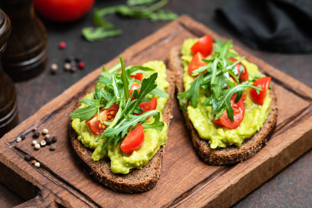
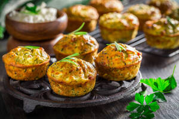

"Budget-friendly cooking made simple and scrumptious!"
Featured

Avocado Toast
Banana smoothie
Gourmet pizza
Avocado Toast
Ingredients:
1 ripe avocado
2 slices of bread (whole grain or your preferred type)
Salt and pepper to taste
Optional toppings: sliced tomatoes, poached or fried eggs, crumbled feta cheese, red pepper flakes, sliced radishes, etc.
Instructions:
Start by toasting your bread slices until they reach your desired level of crispiness.
While the bread is toasting, cut the avocado in half lengthwise and remove the pit. Scoop out the flesh into a small bowl.
Mash the avocado with a fork until it reaches your desired consistency. Some people prefer it completely smooth, while others like it chunky. Season the mashed avocado with salt and pepper to taste.
Once the bread is toasted, spread the mashed avocado evenly onto each slice.
If desired, add any additional toppings on top of the mashed avocado. Some popular options include sliced tomatoes, poached or fried eggs, crumbled feta cheese, red pepper flakes, sliced radishes, etc.
Serve immediately and enjoy your delicious avocado toast!
Note: Avocado toast is highly customizable, so feel free to get creative with the toppings and seasonings based on your preferences. Additionally, you can drizzle a little olive oil or squeeze some lemon juice over the top for added flavor.
Banana Smoothie
Ingredients:
1 ripe banana, peeled and sliced
1/2 cup plain or vanilla yogurt (Greek yogurt or regular yogurt)
1/2 cup milk (dairy or plant-based such as almond, soy, or coconut milk)
1 tablespoon honey or maple syrup (optional, for added sweetness)
1/2 teaspoon vanilla extract (optional, for flavor)
Ice cubes (optional, for a colder smoothie)
Instructions:
Place the sliced banana, yogurt, milk, honey or maple syrup (if using), and vanilla extract (if using) in a blender.
If you prefer a colder smoothie, add a handful of ice cubes to the blender as well.
Blend on high speed until all the ingredients are well combined and the smoothie reaches your desired consistency. If the smoothie is too thick, you can add more milk to thin it out.
Once blended to your liking, taste the smoothie and adjust the sweetness or flavor if necessary by adding more honey, maple syrup, or vanilla extract.
Pour the banana smoothie into glasses and serve immediately.
Optionally, you can garnish the smoothie with sliced bananas or a sprinkle of cinnamon before serving.
Enjoy your refreshing banana smoothie as a healthy breakfast, snack, or post-workout drink!
Gourmet Pizza
Ingredients:
1 package (2 1/4 teaspoons) active dry yeast
1 teaspoon granulated sugar
1 cup warm water
2 1/2 cups all-purpose flour
1 teaspoon salt
2 tablespoons olive oil
1/2 cup tomato sauce
1 1/2 cups shredded mozzarella cheese
1/4 cup crumbled goat cheese (optional)
1/4 cup sliced sun-dried tomatoes
1/4 cup fresh basil leaves
Balsamic glaze (optional, for drizzling)
Instructions:
Prepare the Pizza Dough:
In a small bowl, combine the warm water, sugar, and yeast. Let it sit for about 5-10 minutes until the mixture becomes frothy.
In a large mixing bowl, combine the flour and salt. Make a well in the center and pour in the yeast mixture and olive oil.
Stir the ingredients together until a dough forms.
Turn the dough out onto a floured surface and knead for about 5-7 minutes until smooth and elastic.
Place the dough in a greased bowl, cover it with a clean kitchen towel, and let it rise in a warm place for about 1-1.5 hours until doubled in size.
Preheat the Oven:
Preheat your oven to 475°F (245°C) and place a pizza stone or upside-down baking sheet in the oven to heat up.
Assemble the Pizza:
Once the dough has risen, punch it down and divide it into two equal portions.
Roll out each portion of dough on a lightly floured surface into a circle, about 12 inches in diameter.
Transfer the rolled-out dough to a piece of parchment paper.
Add the Toppings:
Spread half of the tomato sauce evenly over each pizza dough, leaving a small border around the edges.
Sprinkle half of the shredded mozzarella cheese over each pizza.
Top the pizzas with the sliced prosciutto, sun-dried tomatoes, kalamata olives, and crumbled goat cheese.
Bake the Pizzas:
Carefully transfer the pizzas (on the parchment paper) onto the preheated pizza stone or baking sheet in the oven.
Bake for about 12-15 minutes, or until the crust is golden brown and the cheese is bubbly and melted.
Finish and Serve:
Remove the pizzas from the oven and let them cool for a minute or two.
Garnish the pizzas with fresh basil leaves and a drizzle of balsamic glaze, if desired.
Enjoy your gourmet pizza with its delicious combination of flavors and textures!
Breakfast
Dosa
Idli
Vada
Puri
Ponganalu
Fruit Salad
Egg Wrap

Egg Muffin
Dosa
Ingredients:
1 cup Rice
1/4 cup Urad Dal (Black Lentils)
Water (as needed)
Salt to taste
Instructions:
Wash rice, urad dal together. Soak them in water for 7-8 hours.
Drain the water and grind the soaked ingredients into a smooth batter. Add water as needed to get the right consistency.
Transfer the batter into a large bowl. Add salt and mix well.
Cover the bowl and let the batter ferment overnight or for at least 8 hours in a warm place.
After fermentation, the batter will rise and become airy.
Heat a non-stick or cast iron skillet over medium heat.
Pour a ladleful of batter onto the center of the skillet and spread it in a circular motion to make a thin dosa.
Drizzle oil around the edges of the dosa and cook until the bottom turns golden brown.
Flip the dosa and cook the other side until it's cooked through.
Serve hot dosas with peanut chutney and sambar.
Idli
Ingredients:
1 cup Idli Rava
1 cup Urad Dal (Split Black Lentils)
Water (as needed)
Salt to taste
Instructions:
Wash idli rava, urad dal. Soak them in water for overnight.
Drain the water and grind urad dal into a smooth batter. Add water as needed to get the right consistency.
Transfer the batter into a large bowl. Add salt, drained idli rava and mix well.
Cover the bowl and let the batter ferment overnight or for at least 8 hours in a warm place.
After fermentation, the batter will rise and become airy.
Grease the idli molds with oil or ghee.
Pour the batter into the molds, filling them about 3/4 full.
Steam the idlis in a steamer for about 10-12 minutes until they are cooked through.
Remove the idlis from the molds using a spoon.
Serve hot idlis with sambar, peanut chutney, or any desired accompaniment.
Vada
Ingredients:
1 cup Urad Dal (Split Black Lentils)
2-3 Green Chilies, chopped
1 inch Ginger, grated
A few Curry Leaves, chopped
2 tablespoons Chopped Coriander Leaves
1 teaspoon Cumin Seeds
1/2 teaspoon Black Pepper, crushed
1/2 teaspoon Baking Soda
Salt to taste
Oil for deep frying
Instructions:
Wash urad dal and soak it in water for overnight.
Drain the water and grind the soaked dal into a smooth batter using very little water.
Transfer the batter into a mixing bowl. Add chopped green chilies, grated ginger, chopped curry leaves, chopped coriander leaves, cumin seeds, crushed black pepper, baking soda, and salt. Mix well.
Heat oil in a deep frying pan.
Take a small portion of the batter and shape it into a small ball. Flatten it slightly to form a vada shape with a hole in the center.
Carefully slide the shaped vada into the hot oil.
Fry the vadas on medium heat until they turn golden brown and crispy on all sides.
Remove the fried vadas using a slotted spoon and drain excess oil on paper towels.
Serve hot vadas with peanut chutney or sambar.
Puri
Ingredients:
2 cups Whole Wheat Flour
1/2 teaspoon Salt
1 tablespoon Oil
Water (as needed)
Oil for deep frying
Instructions:
In a mixing bowl, combine whole wheat flour, salt, and oil.
Gradually add water and knead the mixture into a smooth dough. The dough should be firm but pliable.
Cover the dough with a damp cloth and let it rest for about 15-20 minutes.
Divide the dough into small equal-sized balls.
Roll out each ball into a small circle using a rolling pin. The puris should be neither too thick nor too thin.
Heat oil in a deep frying pan over medium-high heat.
Once the oil is hot, gently slide the rolled out puris into the oil, one at a time.
Fry the puris until they puff up and turn golden brown on both sides.
Remove the fried puris using a slotted spoon and drain excess oil on paper towels.
Serve hot puris with potato curry, chana masala, or any desired accompaniment.
Ponganalu
Ingredients:
1 cup Idli Batter
1/4 cup Finely Chopped Onions
2-3 Green Chilies, finely chopped
2 tablespoons Finely Chopped Coriander Leaves
1/2 teaspoon Mustard Seeds
1/2 teaspoon Cumin Seeds
Salt to taste
Oil for greasing
Instructions:
In a mixing bowl, combine idli batter, chopped onions, chopped green chilies, chopped coriander leaves, grated carrot, and salt. Mix well.
Heat a ponganalu pan (appe pan) on medium heat and grease the molds with oil.
In a small tadka pan, heat a little oil and add mustard seeds, cumin seeds, and asafoetida. Let them splutter.
Pour the tadka into the idli batter mixture and mix well.
Fill each mold of the ponganalu pan with the batter mixture.
Cover the pan and cook the ponganalu on low to medium heat until they turn golden brown on the bottom.
Flip the ponganalu using a spoon or fork and cook until they are evenly cooked and golden brown on all sides.
Remove the cooked ponganalu from the pan and repeat the process with the remaining batter.
Serve hot ponganalu with chutney or sambar.
Fruit Salad
Ingredients:
1 Apple, diced
1 Banana, sliced
1 cup Grapes, halved
1 cup Strawberries, quartered
1 Orange, peeled and segmented
1/2 cup Pineapple chunks
1/2 cup Blueberries
1/2 cup Raspberries
1/4 cup Honey or Maple Syrup
1 tablespoon Fresh Lemon Juice
Fresh Mint Leaves (for garnish)
Instructions:
In a large mixing bowl, combine all the diced and sliced fruits.
In a small bowl, whisk together honey or maple syrup with fresh lemon juice to make the dressing.
Pour the dressing over the mixed fruits and gently toss until the fruits are evenly coated.
Chill the fruit salad in the refrigerator for about 30 minutes before serving.
Garnish with fresh mint leaves just before serving.
Serve the fruit salad chilled as a refreshing and healthy dessert or snack.
Egg Wrap
Ingredients:
2 Chapatis (Indian flatbreads)
2 Eggs
1 Onion, thinly sliced
1 Tomato, thinly sliced
1 Green Bell Pepper, thinly sliced
1/2 teaspoon Red Chili Powder
1/2 teaspoon Cumin Powder
Salt to taste
2 tablespoons Oil
Fresh Coriander Leaves (optional, for garnish)
Instructions:
Heat a non-stick skillet over medium heat and warm the chapatis on both sides. Set aside.
In a bowl, beat the eggs and season with red chili powder, cumin powder, and salt.
Heat oil in the same skillet over medium heat. Add thinly sliced onions, tomatoes, and green bell peppers. Sauté until they are soft and slightly caramelized.
Pour the beaten eggs over the sautéed vegetables in the skillet. Allow the eggs to set slightly.
Place one warm chapati on top of the partially cooked egg mixture in the skillet. Press down gently with a spatula.
Carefully flip the chapati with the egg mixture to cook the other side until the egg is fully cooked.
Repeat the process with the remaining chapati and egg mixture.
Once cooked, remove the egg-wrapped chapatis from the skillet and place them on a serving plate.
Garnish with fresh coriander leaves if desired.
Slice the egg wraps into halves or quarters and serve hot.
Egg Muffin
Ingredients:
6 Eggs
1/4 cup Milk
1/2 cup Grated Cheese
1/4 cup Diced Bell Peppers
1/4 cup Diced Onions
1/4 cup Diced Tomatoes
Salt and Pepper to taste
Cooking Spray or Melted Butter, for greasing
Instructions:
Preheat your oven to 375°F (190°C). Grease a muffin tin with cooking spray or melted butter.
In a mixing bowl, crack the eggs and whisk them together with milk until well combined.
Stir in grated cheese, diced bell peppers, onions, tomatoes, salt, and pepper. Mix until evenly distributed.
Pour the egg mixture evenly into the greased muffin tin, filling each cup about 3/4 full.
Add any optional add-ins to each muffin cup if desired.
Bake in the preheated oven for 20-25 minutes, or until the egg muffins are set and lightly golden on top.
Remove the muffin tin from the oven and let the egg muffins cool for a few minutes.
Use a knife or spatula to gently loosen the edges of the egg muffins from the muffin tin.
Carefully remove the egg muffins from the tin and serve warm.
Store any leftover egg muffins in an airtight container in the refrigerator for up to 3 days. They can be reheated in the microwave before serving.
Lunch
Rajma Chawal
Ingredients:
1 cup Rajma (Kidney Beans), soaked overnight
2 cups Basmati Rice
2 Onions, finely chopped
2 Tomatoes, finely chopped
2 Green Chilies, slit
1 tablespoon Ginger-Garlic Paste
1 teaspoon Cumin Seeds
1 teaspoon Red Chili Powder
1/2 teaspoon Turmeric Powder
1 teaspoon Garam Masala
2 tablespoons Oil
Salt to taste
Fresh Coriander Leaves (for garnish)
Instructions:
Pressure cook soaked rajma with salt until soft.
Heat oil in a pan, add cumin seeds, chopped onions, and sauté until golden brown.
Add ginger-garlic paste and sauté for a minute.
Add chopped tomatoes, green chilies, red chili powder, turmeric powder, garam masala, and salt. Cook until oil separates.
Add cooked rajma along with its water and simmer for 10-15 minutes.
Meanwhile, cook basmati rice separately.
Serve hot rajma with steamed basmati rice.
Garnish with fresh coriander leaves.
Menthu Papu
Ingredients:
1 cup Toor Dal
2 tablespoons Fenugreek Seeds
1 Onion, finely chopped
2 Tomatoes, finely chopped
2 Green Chilies, slit
1 teaspoon Mustard Seeds
1 teaspoon Cumin Seeds
1/2 teaspoon Turmeric Powder
A pinch of Asafoetida (Hing)
Few Curry Leaves
2 tablespoons Ghee or Oil
Salt to taste
Fresh Coriander Leaves (for garnish)
Instructions:
Wash and pressure cook toor dal with fenugreek seeds, turmeric powder, and salt until soft.
Heat ghee or oil in a pan, add mustard seeds, cumin seeds, and asafoetida. Let them splutter.
Add chopped onions, green chilies, and curry leaves. Sauté until onions turn translucent.
Add chopped tomatoes and cook until they turn mushy.
Add cooked dal to the pan and mix well. Adjust consistency by adding water if needed.
Simmer for a few minutes until the flavors blend well.
Garnish with fresh coriander leaves.
Serve hot with rice or roti.
Paneer Butter Masala
Ingredients:
200g Paneer (cubed)
2 tablespoons Butter
2 Onions (finely chopped)
2 Tomatoes (pureed)
1 tablespoon Ginger-Garlic Paste
1 teaspoon Red Chili Powder
1/2 teaspoon Turmeric Powder
1 teaspoon Garam Masala
1/2 cup Fresh Cream
Salt to taste
Fresh Coriander Leaves (for garnish)
Instructions:
Heat butter in a pan.
Add chopped onions and sauté until golden brown.
Add ginger-garlic paste and sauté for a minute.
Pour in the tomato puree and cook until oil separates.
Add red chili powder, turmeric powder, garam masala, and salt. Mix well.
Add paneer cubes and cook for 2-3 minutes.
Pour in fresh cream and mix gently.
Cook for another 2 minutes.
Garnish with fresh coriander leaves.
Serve hot with naan or rice.
Pulihora
Ingredients:
1 cup Rice
1 Lemon-sized Tamarind
3 tablespoons Oil
1 teaspoon Mustard Seeds
2-3 Dried Red Chilies
1/2 teaspoon Turmeric Powder
10-12 Curry Leaves
2 tablespoons Peanuts
2 Green Chilies, slit
Salt to taste
Fresh Coriander Leaves (for garnish)
Instructions:
Cook rice and allow it to cool.
Soak tamarind in warm water and extract its juice.
Heat oil in a pan, add mustard seeds, peanuts. Sauté until dals turn golden brown.
Add curry leaves, green chilies, turmeric powder. Sauté for a minute.
Add tamarind extract, salt, and cook until the mixture thickens.
Add cooked rice to the tamarind mixture and mix well until rice is coated evenly.
Garnish with fresh coriander leaves.
Serve Pulihora hot or at room temperature.
Drinks
Hot Chocolate Coffee
▼
Ingredients:
1 cup Milk
2 tablespoons Instant Coffee Powder
1 packet of Nestle® Carnation powder
Instructions:
In a saucepan, heat milk over medium heat until hot but not boiling.
Add instant coffee powder, carnation powder. Whisk until well combined and there are no lumps.
Pour the hot chocolate coffee into mugs.
Serve hot and enjoy!
Green Tea
▼
Ingredients:
1 Green Tea Bag
1 cup Water (filtered)
Couple Mint Leaves
1 teaspoon Dried Lemongrass
1/2 teaspoon Honey (optional)
Instructions:
Boil water in a saucepan.
Add mint leaves and lemongrass to the boiling water.
Turn off the heat and let the herbs steep in the water for 3-5 minutes.
Place the green tea bag in a cup.
Pour the steeped herbal water over the tea bag.
Let the tea bag steep in the water for 2-3 minutes.